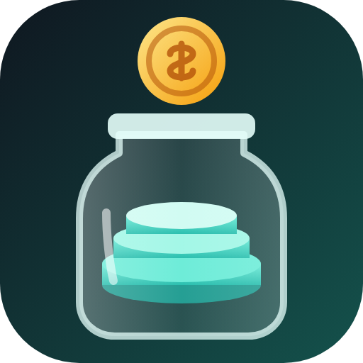
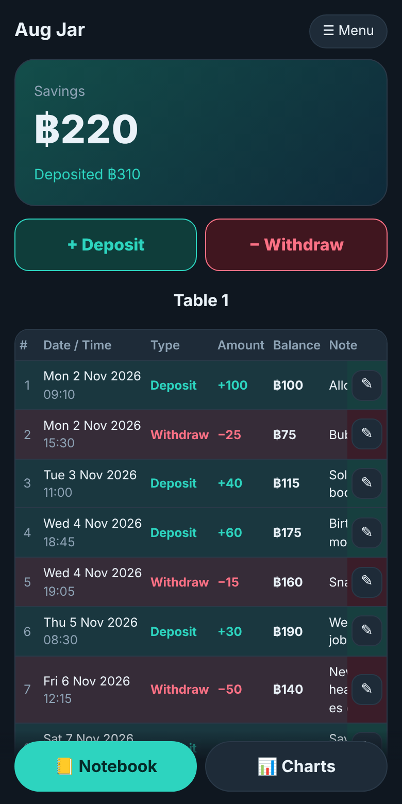
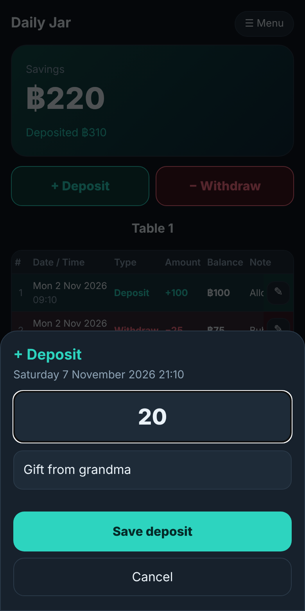
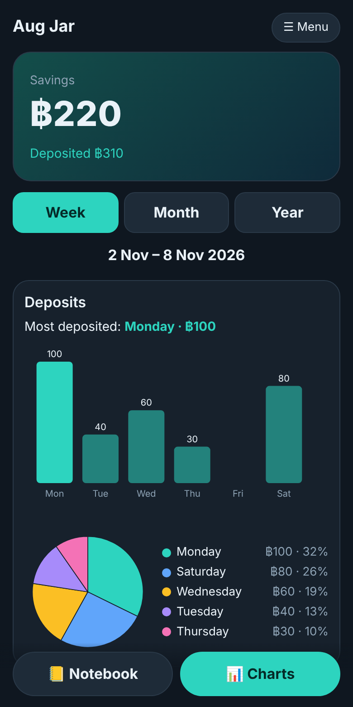

Daily JarTap Deposit or Withdraw, type the amount, add a note. Daily Jar writes the date and time for you and keeps a running balance, like a real notebook.กดฝากหรือถอน พิมพ์จำนวนเงิน เขียนโน้ต Daily Jar ลงวันที่และเวลาให้เอง พร้อมยอดคงเหลือสะสม เหมือนสมุดจริง
Free · No login · No ads · Your data stays on your phoneฟรี · ไม่ต้องล็อกอิน · ไม่มีโฆษณา · ข้อมูลอยู่ในเครื่องคุณ

31 rows per table, then the next table. Deposits are green, withdrawals are red.ตารางละ 31 แถว เต็มแล้วไปตารางถัดไป ฝากสีเขียว ถอนสีแดง
Every entry is stamped when you save it, for example Friday 6 November 2026 17:00.ทุกรายการลงเวลาตอนบันทึก เช่น Friday 6 November 2026 17:00
Tap the pencil to change the amount, type or note. The balance updates.กดดินสอเพื่อแก้จำนวน ประเภท หรือโน้ต ยอดคงเหลือคำนวณใหม่
Bar and pie charts by week, month and year. See which day or month you saved or spent the most.กราฟแท่งและวงกลม รายสัปดาห์ เดือน ปี ดูว่าวันหรือเดือนไหนฝากหรือถอนมากสุด
No account and no server. Everything is stored only on your device.ไม่มีบัญชี ไม่มีเซิร์ฟเวอร์ ทุกอย่างเก็บในเครื่องคุณเท่านั้น
Export a backup file or CSV, and restore it on a new phone.ส่งออกไฟล์สำรองหรือ CSV แล้วกู้คืนบนมือถือเครื่องใหม่


No. It never holds or moves real money. It only records the numbers you type.ไม่ใช่ ไม่ได้เก็บหรือโอนเงินจริง เป็นเพียงตัวบันทึกตัวเลขที่คุณพิมพ์
Only on your own device. Other people who install the app start with an empty notebook. If you uninstall the app or clear its data, it is gone, so use Menu → Back up now and then.อยู่ในเครื่องคุณเท่านั้น คนอื่นที่ติดตั้งจะเริ่มจากสมุดว่าง ถ้าถอนการติดตั้งหรือล้างข้อมูลแอป ข้อมูลจะหาย ควรใช้ เมนู → สำรองข้อมูล เป็นระยะ
Yes. No ads, no subscription.ฟรี ไม่มีโฆษณา ไม่มีรายเดือน
Daily Jar always shows years in CE (for example 2026), in both languages.Daily Jar แสดงปีเป็น ค.ศ. (เช่น 2026) ทั้งสองภาษา